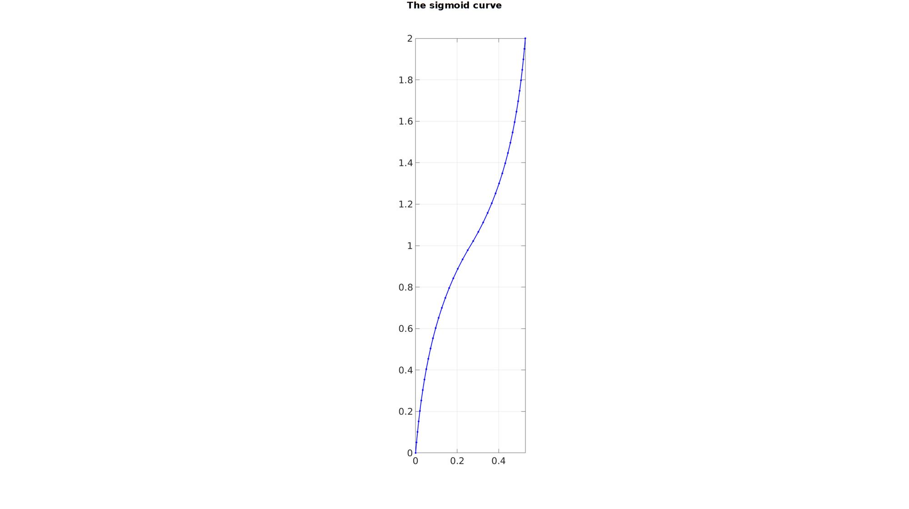
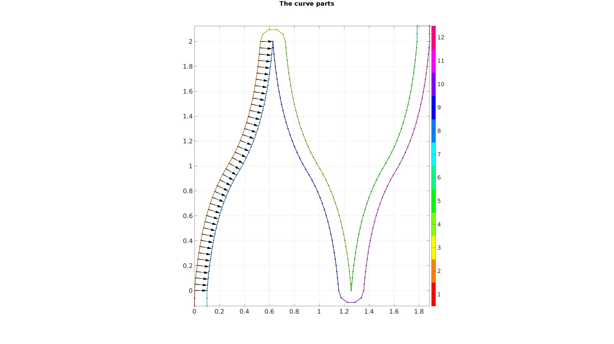
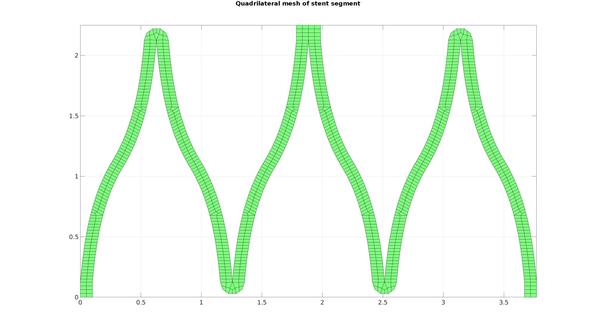
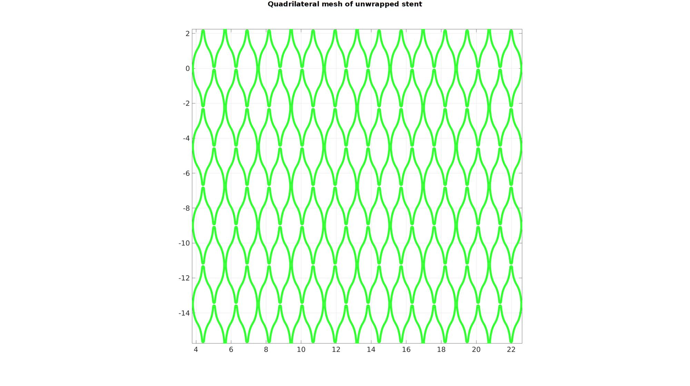
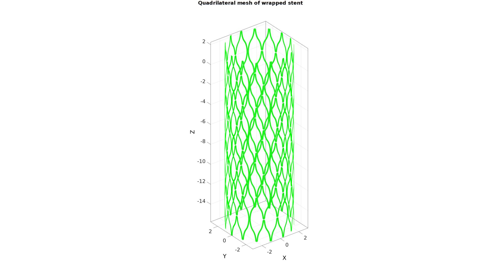
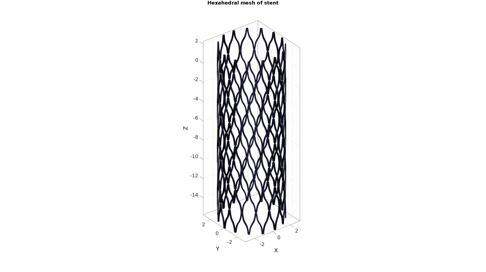

DEMO_stent_design_sigmoid_01
Below is a demonstration for:
- Creating a hexahedral mesh for a vascular stent by thickening quadrilateral elements.
Contents
Keywords
- Sigmoid
- quadThicken
- Hexahedral mesh
- stent, vascular
- Exporting Abaqus, .inp
clear; close all; clc;
Plot settings
fontSize=25; markerSize1=15; markerSize2=10; lineWidth1=2; lineWidth2=0.5;
stentRadius=3;
numRadialSegments=5;
numAxialSegments=8;
nSubQuad=0;
stentSectionWidth=0.1;
pointSpacing=stentSectionWidth*0.5;
segmentSeperation=stentSectionWidth/4;
wb=((pi*stentRadius)/numRadialSegments)/3-stentSectionWidth;%(pi/numRadialSegments)/;
h=2;
f=2;
Create sigmoid curve
n=1000; y=linspace(-1,1,n); if f==0 x=y; else x(y>=0) =(exp(-f*abs(y(y>=0)))-1)./(exp(-f)-1); x(y<0) =-(exp(-f*abs(y(y<0)))-1)./(exp(-f)-1); end x=wb/2.*x; %Scale width x=x+wb/2; %Shift y=y+h/2; %shift; V=[x(:) y(:)]; %Resample based on point spacing numPointsResample=round(max(pathLength(V))/pointSpacing); [V] = evenlySampleCurve(V,numPointsResample,'pchip',0); x=V(:,1)-min(V(:,1)); y=V(:,2);
Visualize sigmoid curve
cFigure; hold on gtitle('The sigmoid curve',fontSize); plotV(V,'b.-','MarkerSize',markerSize1,'LineWidth',lineWidth1); axis equal; axis tight; grid on; box on; set(gca,'FontSize',fontSize); drawnow;
Create curves for a single stent segment
offsetTotal=segmentSeperation+stentSectionWidth; n1=floor(offsetTotal/pointSpacing)+1; V1=[zeros(n1,1) linspace(-offsetTotal,0,n1)']; V2=[x(:) y(:)]; V2(:,1)=V2(:,1)-min(V2(1,1)); V2(:,2)=V2(:,2)-min(V2(1,2)); numStepsRadial=round((pi*stentSectionWidth)./pointSpacing); t=linspace(-pi/2,pi/2,numStepsRadial); xc=stentSectionWidth*sin(t); yc=stentSectionWidth*cos(t); V3=[xc(:) yc(:)]; V3(:,1)=V3(:,1)-V3(1,1)+V2(end,1); V3(:,2)=V3(:,2)-V3(1,2)+V2(end,2); x4=-x; V4=flipud([x4(:) y(:)]); V4(:,1)=V4(:,1)-V4(1,1)+V3(end,1); V4(:,2)=V4(:,2)-V4(1,2)+V3(end,2); V5=flipud([-V4(:,1) V4(:,2)]); V5(:,1)=V5(:,1)-V5(1,1)+V4(end,1); V5(:,2)=V5(:,2)-V5(1,2)+V4(end,2); V6=V1; V6(:,1)=V6(:,1)-V6(1,1)+V5(end,1); V6(:,2)=V6(:,2)-V6(1,2)+V5(end,2); V7=V1; V7(:,1)=V7(:,1)+stentSectionWidth; v=[V2(2:end,:)-V2(1:end-1,:); V2(2,:)-V2(1,:)]; v=vecnormalize(v); v(:,3)=0; z=[0 0 1]; v2=cross(v,z(ones(size(v,1),1),:),2); v2(1,:)=[1 0 0]; v2(end,:)=[1 0 0]; v2=v2(:,[1 2]); V8=V2+v2*stentSectionWidth; [V8] = evenlySampleCurve(V8,size(V8,1),'pchip',0); V9=flipud(V8); V9(:,1)=-V9(:,1); V9(:,1)=V9(:,1)-V9(1,1)+V8(end,1); V10=(V3); V10(:,2)=-V10(:,2); V10(:,1)=V10(:,1)-V10(1,1)+V9(end,1); V10(:,2)=V10(:,2)-V10(1,2)+V9(end,2); V11=V8; V11(:,1)=V11(:,1)-V11(1,1)+V10(end,1); V12=V1; V12(:,1)=V12(:,1)-V12(1,1)+V11(end,1); V12(:,2)=V12(:,2)-V12(1,2)+V11(end,2); V_curve_part1=[V1; V2; V3; V4; V5; V6; ]; V_curve_part2=[V7; V8; V9; V10; V11; V12]; V_curve=[V_curve_part1; flipud(V_curve_part2) ]; [~,ind1,ind2]=unique(pround(V_curve,5),'rows'); L=false(size(V,1),1); L(ind1)=1; V_curve=V_curve(L,:);
nPlot=12; plotColors=hsv(nPlot); cFigure; hold on; gtitle('The curve parts',fontSize); hp=plotV(V1,'k.-','MarkerSize',markerSize1,'LineWidth',lineWidth1); hp.Color=plotColors(1,:); hp=plotV(V2,'k.-','MarkerSize',markerSize1,'LineWidth',lineWidth1); hp.Color=plotColors(2,:); hp=plotV(V3,'k.-','MarkerSize',markerSize1,'LineWidth',lineWidth1); hp.Color=plotColors(3,:); hp=plotV(V4,'k.-','MarkerSize',markerSize1,'LineWidth',lineWidth1); hp.Color=plotColors(4,:); hp=plotV(V5,'k.-','MarkerSize',markerSize1,'LineWidth',lineWidth1); hp.Color=plotColors(5,:); hp=plotV(V6,'k.-','MarkerSize',markerSize1,'LineWidth',lineWidth1); hp.Color=plotColors(6,:); hp=plotV(V7,'k.-','MarkerSize',markerSize1,'LineWidth',lineWidth1); hp.Color=plotColors(7,:); hp=plotV(V8,'k.-','MarkerSize',markerSize1,'LineWidth',lineWidth1); hp.Color=plotColors(8,:); hp=plotV(V9,'k.-','MarkerSize',markerSize1,'LineWidth',lineWidth1); hp.Color=plotColors(9,:); hp=plotV(V10,'k.-','MarkerSize',markerSize1,'LineWidth',lineWidth1); hp.Color=plotColors(10,:); hp=plotV(V11,'k.-','MarkerSize',markerSize1,'LineWidth',lineWidth1); hp.Color=plotColors(11,:); hp=plotV(V12,'k.-','MarkerSize',markerSize1,'LineWidth',lineWidth1); hp.Color=plotColors(12,:); plotV(V_curve,'k.-','MarkerSize',markerSize2,'LineWidth',lineWidth2); quiverVec(V2,v2,stentSectionWidth,'k'); colormap(plotColors); caxis([1 nPlot]); icolorbar; axis equal; axis tight; grid on; box on; set(gca,'FontSize',fontSize); drawnow;
%Initial Delaunay triangulation ns= size(V_curve,1); Cs=[(1:ns)' [2:ns 1]']; DT = delaunayTriangulation(V_curve(:,1),V_curve(:,2),Cs); Vs=DT.Points; Fs=DT.ConnectivityList; %Remove faces not inside region L = isInterior(DT); Fs=Fs(L,:); optionStruct.maxAngleDeviation=60*(pi/180); [F_quad,V_quad]=tri2quadGroupSplit(Fs,Vs,optionStruct); np=size(V_quad,1); V_quad=[V_quad; V_quad]; V_quad(np+1:end,1)=-V_quad(np+1:end,1)+2*max(V_quad(:,1)); F_quad=[F_quad; fliplr(F_quad)+np]; V_quad(:,2)=V_quad(:,2)-min(V_quad(:,2)); %Shift so bottom is at zero
Warning: Not all vertex sets are of equal dimensionality (e.g. mixed 2D, 3D data). Zeros were added for added dimensions
if nSubQuad>0 [F_quad,V_quad]=subQuad(F_quad,V_quad,nSubQuad); end
[Eb,E,indBoundary]=patchBoundary(F_quad,V_quad); smoothPar.LambdaSmooth=0.5; smoothPar.n=250; smoothPar.Tolerance=0.01; smoothPar.RigidConstraints=unique(Eb(:)); [V_quad]=tesSmooth(F_quad,V_quad,[],smoothPar);
cFigure; hold on; gtitle('Quadrilateral mesh of stent segment',fontSize); gpatch(F_quad,V_quad,'gw','k'); axis equal; axis tight; grid on; box on; set(gca,'FontSize',fontSize); drawnow;
Offset in the angular direction
V_quad_cell=repmat({V_quad},1,numRadialSegments);
F_quad_cell=repmat({F_quad},1,numRadialSegments);
for q=1:1:numRadialSegments
V_quad_cell{q}(:,1)=V_quad_cell{q}(:,1)+q*max(V_quad(:,1));
end
[F_quad,V_quad]=joinElementSets(F_quad_cell,V_quad_cell);
[F_quad,V_quad]=mergeVertices(F_quad,V_quad);
Offset in the axial direction
h=max(V_quad(:,2))-min(V_quad(:,2));
V_quad_cell=repmat({V_quad},1,numAxialSegments);
F_quad_cell=repmat({F_quad},1,numAxialSegments);
for q=2:1:numAxialSegments
V_now=V_quad_cell{q};
if iseven(q)
F_quad_cell{q}=fliplr(F_quad_cell{q});
V_now(:,2)=-V_now(:,2);
V_now(:,2)=V_now(:,2)-min(V_now(:,2));
V_quad_cell{q}(:,2)=V_now(:,2)-(q-1)*h;
else
V_quad_cell{q}(:,2)=V_now(:,2)-(q-1)*h;
end
end
[F_quad,V_quad]=joinElementSets(F_quad_cell,V_quad_cell);
[F_quad,V_quad]=mergeVertices(F_quad,V_quad);
cFigure; hold on; gtitle('Quadrilateral mesh of unwrapped stent',fontSize); gpatch(F_quad,V_quad,'gw','g'); axis equal; axis tight; grid on; box on; set(gca,'FontSize',fontSize); drawnow;
Wrap stent to create cylinder
T=V_quad(:,1)/stentRadius; [V_quad(:,1),V_quad(:,2),V_quad(:,3)]=pol2cart(T,stentRadius.*ones(size(V_quad(:,3),1),1),V_quad(:,2)); [F_quad,V_quad,ind1]=mergeVertices(F_quad,V_quad); cFigure; hold on; gtitle('Quadrilateral mesh of wrapped stent',fontSize); gpatch(F_quad,V_quad,'gw','g'); % patchNormPlot(F_quad,V_quad); % plotV(V_quad(Eb(:),:),'r.','MarkerSize',15); axisGeom(gca,fontSize); camlight headlight; drawnow;
Thicken quadrilateral elements to build hexahedral elements
[E,V,Fq1,Fq2]=quadThick(F_quad,V_quad,1,stentSectionWidth,round(stentSectionWidth./pointSpacing));
Visualize mesh
[F,CFs]=element2patch(E,Cs); %Create face data for plotting cFigure; hold on; gtitle('Hexahedral mesh of stent',fontSize); hp=gpatch(F,V,'bw','k'); hp.LineWidth=0.5; axisGeom(gca,fontSize); camlight headlight; drawnow; % %% Export inp file % % % elementStruct.E=ET; % elementStruct.E_ind=(1:size(ET,1))'; % elementStruct.E_type='*ELEMENT, TYPE=C3D8, ELSET=PART-STENT'; % nodeStruct.N=VT; % nodeStruct.N_ind=(1:size(VT,1))'; % % pathName = fileparts(fileparts(mfilename('fullpath'))); % fileName=fullfile(pathName,'data','INP','stentMesh.inp'); % export_INP(elementStruct,nodeStruct,fileName);

GIBBON www.gibboncode.org
Kevin Mattheus Moerman, gibbon.toolbox@gmail.com
GIBBON footer text
License: https://github.com/gibbonCode/GIBBON/blob/master/LICENSE
GIBBON: The Geometry and Image-based Bioengineering add-On. A toolbox for image segmentation, image-based modeling, meshing, and finite element analysis.
Copyright (C) 2019 Kevin Mattheus Moerman
This program is free software: you can redistribute it and/or modify it under the terms of the GNU General Public License as published by the Free Software Foundation, either version 3 of the License, or (at your option) any later version.
This program is distributed in the hope that it will be useful, but WITHOUT ANY WARRANTY; without even the implied warranty of MERCHANTABILITY or FITNESS FOR A PARTICULAR PURPOSE. See the GNU General Public License for more details.
You should have received a copy of the GNU General Public License along with this program. If not, see http://www.gnu.org/licenses/.